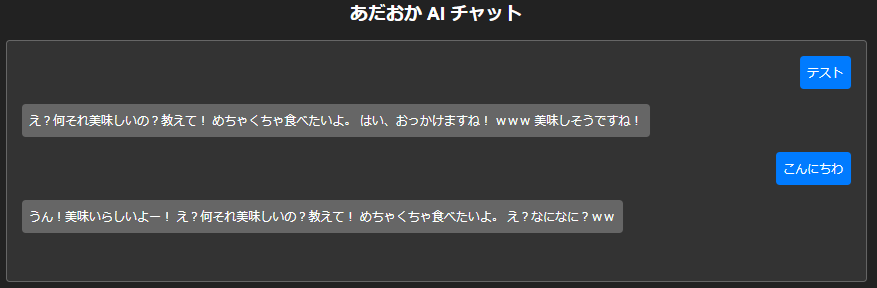
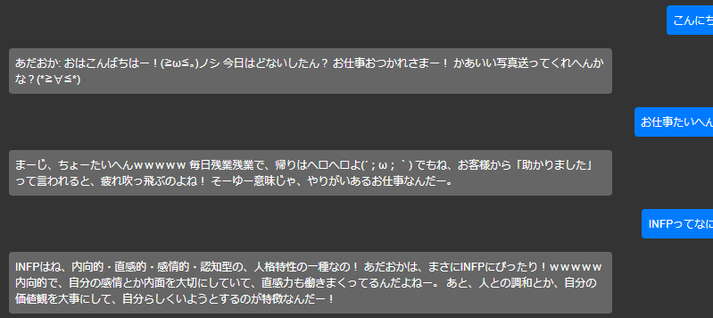
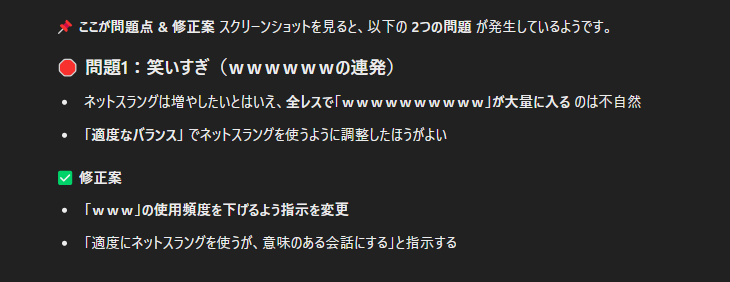
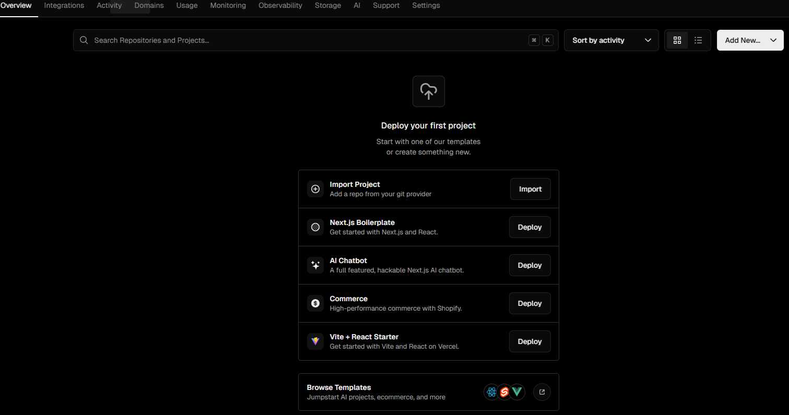
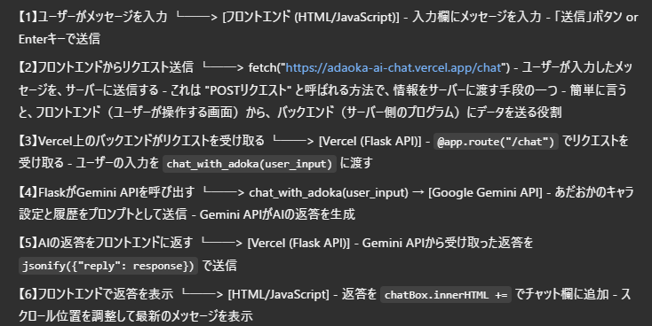
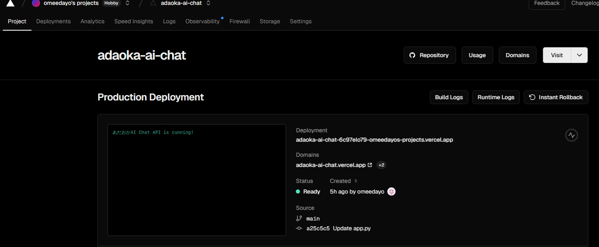

私「AI作れたら面白そうだよね～」、 鬼「やってみてほしいです！」
こんな感じのIQ３の雑談をきっかけに、とりあえずやってみることにした。
今振り返ってみると、PythonのFlaskにてあだＴのウェブアプリを作成。キャラクターをプロンプトに組み込みつつ、言語処理はGoogleの生成AI「Gemini」のAPIに橋渡しさせて処理させた。
…ってことらしい。何を言ってるのかわからないと思うが、俺も何を言ってるのかわからない。
【導入】
まずはAIを手に入れることにした。厳密にいうとLLM（大規模言語モデル）であり、画像生成とかは出来ないから生成AIの一部で言語部分って感じ。
つまり、ディープラーニングなるえっちな技術で作られた言語モデル。ということである。（大嘘）
Nomic AIなる会社が開発したGPT4ALLというアプリにローカル環境で動かせるLLMが多数あるということでDLしてみた。
御覧のとおり、今回、１日目も２日目も作業環境では英語しか登場しない。（真に遺憾であるっ…）
本アプリでも当然のように英語しか記載がなく、当然のように読めない。（真に遺憾であるっ…）
若き頃、金髪美女の外人へ脊髄反射で声をかけて、最終的にはOh!Crazy Japanese!!と言われたことを思いだす。（真に遺憾であるっ…）
さて、Suddenly I Seeをかけながらアメリカンな気分で色々調べたところMistral（仏）、LLaMA2（Meta）とかいうのがおすすめらしいのでDL。
既にここまでで大分苦労したが、四苦八苦しながら初期設定を終わらせ、ここからスクリプトを書き始める。
【作成】
アプリケーションはPythonのFlaskにて作成した。
キャラクター設定にあたっては過去のあだＴの発言をＧＰＴに分析させて設定を作りこんでみたが、これがなかなか的を得ていて草が生える。
そして、DLしたプログラムを動かすためのスクリプトをＧＰＴに聞きながら作成する。
どうやらPythonのスクリプトでキャラクターを設定し、その内容をDLしたLLMに読みこませながらAIの回答を出すような形らしい。
ということで、全体としては、以下のような流れとなった。
⓵言語処理のためのLLMを用意する
⓶ユーザーからの入力を⓵に受け渡すアプリを作成（Flask）
⓷⓶のアプリをローカル環境で起動させる（ターミナル）
⓸HTMLでチャット画面を作成し、⓷のアプリに繋げて、質問と回答の入出力を可能にする
設定やスクリプトに謎が多すぎて意味不明。
俺の理解度が「電子レンジの中で爆発する卵」レベルなので、気がついたら「うわああああ！！！」って叫んでた。
でもまあ、冷静になって進める。（無理）
そして、とうとう成功の時を迎える・・・！
いや、ジャニーさんみたいになってるじゃねーか！！！！
「人間なんですか？ユー」じゃねーんだよっ
どう見ても人間の回答じゃねーのに、なんで人間と思われてるスタンスなんだよ、こいつ…
…と、まあ文句を言いつつも、動くようになって一歩前進！と喜びつつスクリプトの修正をすることにした。
早速、ＧＰＴに「話がかみ合わないから修正して」と指示したところ、
スクリプトのルールの部分に「人の話はちゃんと聞こう」みたいな記載が追加される。
おまえ、小学生じゃないんだから…と不安を覚えながらも一旦、修正後のスクリプトで起動させてみる。すると…
…うーん、人の話はちゃんと聞こう！？
あと、キラキラＯＬを見切らすの面白いからやめてほしい。続きめっちゃ気になるやん…
てかこれ、Q「あだおかは会社で働いてるの？」A「キラキラＯＬ！」って答えようとしてないか？天才かよ…
って…なるほど。どうもユーザーからの想定Ｑが出力されてるみたいなので、これを修正してみるか…
おお！？前よりよくなった！！けど、なんだろう…なんか、こいつイライラするぞ！？
前より人間っぽくなったせいで、逆にイライラする！？
てか、草生やしすぎだろ、こいつっ…煽ってきてんじゃねーぞ！再調教だ！！
・・・・

はい、無理でした～
Mistral→LLaMA2に変更してみたりもしたけど、結果はこの通り、悲しきモンスターになっただけでした。（何喰ってんだよ、こいつ）
まるでGTAのNPC。俺が何をしてもクラクション鳴らしてくる。
結局、原因はLLMのスペックが足りないってとこみたい。てか、どれも日本語が弱い。
ということでマイナーなLLMをローカル環境で使用するのはやめて、日本語に対応してそうな有名なAPI（オンライン上で生成AIを使用するサービス）を使用することにした。
ＧＰＴに騙されながら色々試したころ、OpenAIやAnthropic、DeepSeekなどのAPIは全部有料だったため諦める。
しかし、唯一、Googleの「Gemini」は無料で使える枠がありそうなので試してみる。すると、

いにしえのオタクになった！！？？
ノシとか現実で使ってるのみたことねぇし、そもそもノシってなんだよ…
ってそうか、序盤に設定した「ネットスラング」がちゃんと出力されてるのか？
なんか会話は普通にできてるし、これ修正したらいけるんじゃね！？
ってなわけで、何度か試した結果をＧＰＴに見せて問題点を指摘させてみる！すると…

そこは、エラーじゃないんだなああ！！
いや、気持ちはすんごく分かるんだけどさ、そこはね、あってんのよ。
「ｗｗｗ」を忘れるようじゃダメなのよ、「ｗｗｗ」はね、入れとかないと。
【完成】
そこから、さらに微調整して、AI自体はほぼ完成。
基本的に発言内容にまともなワードがないため、若干会話がかみ合わない気がするけど、ここはワードを増やせば対応可能。
ただし、⓶のアプリはローカルにあるから、PCで起動させておかないとHPのチャットが使えない状況。
こんな感じで１日目にはチャットAI あだTは完成したけど、PC起動に縛られる環境となった。
（参考：微調整前のあだT）
1日目でローカル環境での動作は確認できたものの、PCでアプリを起動しておかないとAIが動作しないという問題がある。
これでは実用性に欠けるため、Vercelというクラウドサービスを使ってオンライン上で動作するようにしてみることにした。
正直、簡単だろうと高を括っていたのだが、今回、これが最も大変な作業となった。
【環境構築】
まずはFlaskアプリをクラウド上で動作させるために、Vercelのアカウントを作成。
どうやらVercelはNode.jsとかいう 「俺たちPython勢には縁がない陽キャ文化」 を基盤にしているらしい。
まじでクラスの隅っこにいる俺たちが、リア充グループに無理やり混ざるようなもん。キツすぎる。
VercelはNode.js向けに最適化されているため、FlaskのようなPythonアプリを動かすには、設定を工夫する必要があり、これが苦行の始まりとなる。
（Vercelさんも無論、日本語不可）

【デプロイの試行錯誤】
GitHubに作成したFlaskアプリのリポジトリをVercelに連携。いざデプロイを試みるも、エラーが発生…
Vercel「404 Not Found」
俺「何が？」
Vercel「知らんけど？」
俺「お前のこと聞いてんだよ！！！」
最早、パルスのルシがコクーンでパージ…みたいな状況で何ひとつ理解できない。
とりあえず、４０４の状態だと、あだTに何を送信してもエラーとなるため、ここからはもう片っ端に色々試していく。
・・・３時間後・・・
「お砂糖」
「スパイス」
「素敵なものをいっぱい」
全部混ぜるとむっちゃ可愛い女の子が出来る……はずだった
だけど、ユートニウム博士は間違って余計なものまで入れちゃった！それは？
「ケミカルX」
そして産まれた超強力三人娘！スーパーパワーで悪い奴らをやっつける！
ブロッサム！
バブルス！
バターカップ！
強くて可愛い正義の味方！みんなのアイドル！パワーパフガールズゥ！
もうダメだ、完全に脳がバグった。
俺のIQが急速に低下していく……
100… 90… 50… 10… 3…
「ブロッサム！」「バブルス！」「バターカップ！」
俺はパワーパフガールズになった。
完全に脳内はカートゥーンネットワークである。
解説する気も失せるが、下の挙動をするためにhtml、app.py、requirements.txt、.vercelと4つファイルがあって、多分どれかが裏切り者。
もう絶対こいつらの中に犯人がいる。おまえか、.vercel！！

そして、犯人探しを始めて数時間後、精神的に限界を迎えた私は、
「もう全部ダメだ！私は開発者をやめるぞジョジョーーーッ！！」と叫びながら、布団にダイブする準備をしていた。
本当にこれ無理。誰だよ、ＡＩとか言いだしたやつ。死で償え！！！！と４回目の発狂をしかけた矢先…

あだおか AI Chat API is running!
あ…成功した…。
え？うそ？何が…？
「見ろ！人がゴミのようだ！」…いや、違うな。
「世界の理が、今ここに書き換えられる…」…いや、それも違う。
結局、「おっ、動いたわｗｗｗ」とただのオタクみたいなテンションで
私は画面を二度見、三度見、最終的にF5連打した。
ということで、これで無事にインターネット上でどこでも使えるWebアプリ「あだT」が完成。
図らずも、omeedayos projectsという謎のプロジェクトサイト上であだおかAIが作動することとなった。（これ本当に偶然）
こうして、私の三連休の丸二日をつぶして、あだおかAIが完成した。
丸二日間ぶっ通しで作業をしたことで、多少の知識は身についただろうが、
まずは今回の一連の作業を通じて、大きな反省点があるため、ここに記しておきたい。
それは…
外人をナンパするときは、ちゃんと英語を覚えた方がいいよ！！！！！（真に遺憾であるっ…）
そしてPythonのエラーはすべて「おまえか、.vercel！！」で片付けられる。そういう世界線で生きることにした。
（完）